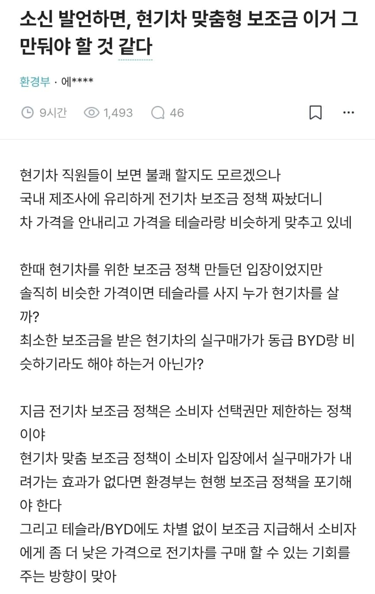
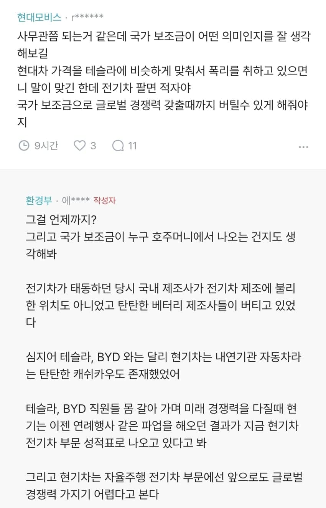

현기차 임금 절반으로 깎아야함
보조금이 뭐하는건지 모르나 소비자 보호가 아니고 생산자한테 퍼주는게 본질인데 나는 현대자한테 왜 퍼주는지 이해가 안감
태업,파업을 없애던가 도태되던가
솔직히 말하자면 제조업 단가를 중국에 맞추기? 불가능하다고봄 근데 그럼 뭔가 낮추려는 모습이라도 보여야지 배터리 가격 계속 떨어지는거 아는데 너무 비쌈
그냥 답이 없음
버릇이 아주 고약하고
절대 사주면 안됨 ㅇㅇ
보증기간 만료안된 하이브리드 하이테크센터에서 못고치고 벌써 몇번째 고속도로에서
멈췄다. N페스티벌도 가고 제네시스도 좋아했으나 현시점 ㄳㅂ놈들임
그냥 더 망했으면 좋겠음. 테슬라 만세다!
사무관쯤 되는거같은데 이지랄 ㅋㅋㅋㅋㅋㅋㅋㅋㅋㅋㅋㅋㅋㅋㅋㅋㅋㅋㅋㅋㅋㅋㅋㅋㅋㅋㅋㅋㅋㅋㅋㅋㅋㅋㅋㅋ
줘패버리고싶네 ㅋㅋㅋㅋㅋㅋㅋㅋㅋㅋㅋㅋㅋㅋㅋㅋㅋㅋㅋㅋ
모비스 병신년 또 지랄이네 저기는 참 병신비율 높아
모든 보조금은 양날의 검임
돈은 가치저장 수단일 뿐이고 가치가 오른게 없는데 돈이 풀리면 그만큼 물건값이 오름
보조금은 일회성이지만 오른가격은 안내려감
좆같네 국민은 국가에 소속이 아니야?
개드립 여론 진짜 확바뀌네 ㄷㄷ 예전엔 당연히 현기 전기차 지켜야한다고 보조금 정책 잘한다고 하더니..
지금은 또 현기 개새끼가 됐네
나도 저 공무원 의견에 동감
그냥 소비자 선택권을 제한하는 정책임
뜯어보면 대놓고 현기 밀어주는 보조금 정책
자국산업보호는맞는데 그게 자국인 등쳐먹는 꼴처럼 돈을 거의비슷하게받고 테슬라한테따잇당하면 안되겠지요
글로벌 경쟁력을 R&D 로 하는게 아니라 하청 쥐어짜기, 보조금 풀로 땡기기로 하고 있으니까 문제지. 10년을 기다려줬는데도 아직도 하이브리드로 충분하다고 생각하니까 ㅈ같은거임. 전기차, 자율주행 기술 팔면 손해 안나오도록 생산할 생각을 못하고 내가 팔아주잖아? ㅇㅈㄹ하고 있음...
생산성 없는 노조의 요구는 쳐내기도 하면서 밑에 하청한테 개발여력도 좀 남겨줘. 개발은 하청이 다 하는데 쥐어짜면 당연히 ㅈ되는 결과밖에 안나오지. 현차 이슈나 리콜 계속 나오는것도 결국 그것 때문임.
지금 시대에 이대로 계속하면 5년안에 망한다. 노키아 마냥 안주하지 말고 과감하게 결단해야돼
기승전파업 에라이 ㅋㅋㅋ